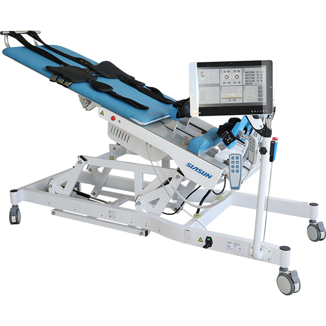

肢体反馈医疗机
本产品针对神经康复急性期的卧床患者进行了精心策划 ，主要目的在于帮助他们从卧位安全过渡到站立位， 从而预防长期卧床可能引发的多种并发症，如骨骼疏松 、体位性血压下降、皮肤压疮以及肌肉退化等。通过特 定的训练方式，本产品不仅有助于增强患者的心肺机能 ，维持人体的力学负荷，还能有效避免尿潴留问题，并 促进下肢乃至全身的生理循环。这款产品融合了主动与 被动的步伐训练机制，精确地模拟人体自然行走的步态， 旨在最大限度地恢复患者的行走能力，并纠正异常的步态 表现。在患者康复的早期阶段，它能够协助患者建立起正 确的行走模式，为后续全面的康复治疗打下坚实的基石。 本产品尤其适用于因脑卒中（涵盖脑梗塞和脑出血）等神 经系统损伤造成的下肢功能受损患者的康复治疗。它配备 的压力监测体系能够实时追踪患者两侧下肢的步态状态， 而踏板的伸缩机制可以根据不同患者的身高进行个性化适 配。此外，站立角度的广泛可调范围与加厚弹性绷带的结 合使用，能够有效管理患者的下肢生理负荷，进而提升 训练成效。